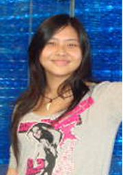

工作让我自信，学习教我自强
尊敬的各位领导、老师，亲爱的同学们：
大家好!
我是生命科学学院04级的学生薛轶群，非常荣幸能在这里和大家分享我的大学经历。我在2004年9月进入东北师范大学生命科学学院学习，2006年9月选择生物技术专业同时被选拔进入基地班。曾担任生命科学学院第十三届学生会主席、04级年级长，东北师范大学红丝带协会会长。曾经是东北师范大学第一届校园使者团成员。
回想刚踏进大学校门不久，荣幸的被选为2004级新生代表在开学典礼上发言的时候曾经说：“从今天开始，我们真正成为东北师大
大家好!
我是生命科学学院04级的学生薛轶群，非常荣幸能在这里和大家分享我的大学经历。我在2004年9月进入东北师范大学生命科学学院学习，2006年9月选择生物技术专业同时被选拔进入基地班。曾担任生命科学学院第十三届学生会主席、04级年级长，东北师范大学红丝带协会会长。曾经是东北师范大学第一届校园使者团成员。
回想刚踏进大学校门不久，荣幸的被选为2004级新生代表在开学典礼上发言的时候曾经说：“从今天开始，我们真正成为东北师大
人。我们将在这绿树环绕、碧波荡漾的校园踏上我们新的征程。”而如今，四年的大学生活已经接近尾声。当我开始整理思绪回忆这段日子的时候，一切仿佛就在昨天。 入学初，要进行两周多的军训，我担任副指导员的工作，白天训练，晚上组织同学们参加运动会文艺表演的排练，由于刚入学有许多要统计或整理的材料，只好利用中午午休和晚上睡前的时间整理，虽然军训期间没有能睡到一个午觉，但借助工作的关系让我在这两周内认识了年级的每一个人，同时锻炼了自己的体力和耐力，还是收获颇多的。军训表彰时，我获得了团嘉奖。
军训加上工作只是涉及体力消耗，还比较容易应付，而学习和工作碰到一起想要平衡就难得多。大一时虽然课程较多，但我的社会职务也较轻松，只是担任院学生会文体部干事和自己班级的团支书，所以适应得比较快，成绩也不错。真正的考验是大二这一年的日子。05年9月，我担任了年级长的职务。由于我们学院学生会换届时间早，在同年11月我接任了院学生会的工作成为了院第十三届学生会主席。要做好学院的工作、为同学服务、还要兼顾自己的课程和实验，这确实让我曾经困惑过如何能处理好各项事务，也怀疑过自己能否胜任这些职位：学生会的工作必须要做好，作为主席，有责任把组织的传统和特色传承下去，还要有创新和改良，让它发展得更好；年级的工作也必须要做好，应该快速的给同学们传递信息，尽可能提供方便条件；自己的学业虽然被放在了工作的后面，当然也不能落下。由于生物专业的课程还涉及数学、英语、物理、化学等多门学科，又是学校高考分数线最高的学院，来的人基本都是学习很强的，由于那时大四最后的排名还都按学习成绩来，所以很多人不愿意在社会工作上付出太多，都集中精力学习，所以有着任职又想要不掉队很难。可是时间是有限的，怎么办呢？最初的想法是运用零碎的时间学习，多数是在晚上，但是忙了一天往往躺在床上就想睡觉，硬熬效率又不高还影响第二天的状态，便不再勉强自己而再寻找方法。后来发现团队合作不仅仅可以用于工作上还对个人的学习很有帮助，于是采用了下面的方法：在课堂上认真听老师讲课，听不进去或者不明白的时候就动笔把老师说的话记下来，尤其是反复强调的部分，可以不理解重点的内容，但是一定要知道哪里是重点，课下与老师或者同学交流，厚着脸皮一直问到自己真正理解为止。大学的课程死记硬背是行不通的，真正理解了自然就能解释清楚。同时笔记的交流也是不可少的，每个人对知识的敏感程度不同，交流笔记可以起到补漏和纠错的作用。最后，通过自身的努力、老师的指导、同学的帮助和同事的合作，工作上我们不仅开展了许多丰富多彩又有意义的活动，我个人还获得了05-06年度的校长奖学金、优秀学生、“五四”红旗团员、社会工作奖、社会实践成果奖等多项荣誉。
2006年3月，随着学校科研立项活动的展开，我作为负责人和其他三人组成小组，申报了《香雪兰组织培养》的课题，进入实验室从最基础的学起，在王丽教授及课题组师兄师姐的指导下于2007年3月完成项目，通过了校团委的验收。期间还参与了香雪兰间接体细胞胚胎发生途径的特异蛋白的研究工作，以第三作者发表了一篇SCI论文。2007年7月进入刘宝教授实验室学习表观遗传学相关技术。在实验室的锻炼让我学会了很多技能。很多东西看似简单，想要得到好的结果却不容易，专心程度、细心程度、熟练程度都与结果的好坏有着直接的关系。同时，在实验过程中还要以平和的心态对待重复和失误，一旦出现什么问题一定不能急躁，要仔细分析原因，从多角度考虑，找到解决办法，吃一堑就一定要长一智，这样前面的失败才有意义。
虽然学习和科研的份量在大学中占的比重很大，但综合素质的锻炼也是非常重要的，所以我也非常注重社会工作和实践的经历，尽量不错过任何一个锻炼自己的机会。为了挑战自我，我参加过校首届心相印女生文化节的形象大使选拔赛。这是我第一次作为选手登上舞台在大家面前以自我介绍、才艺表演等多种形式来展示自己。虽然比赛只获得了优胜奖，但是这对我来说是一个宝贵的经验。此外我还获得过普通话形象大使选拔赛优胜奖；2006“构建和谐社会共创文明交通”交通安全宣传活动优秀组织奖。
2005年11月我作为团代表荣幸的参加了东北师范大学第十七届团代会，能够成为众多团员的代表参加这五年一次的会议意义非同寻常。能够在那庄严的时刻郑重的投下自己的一票，那种光荣感和使命感是很难形容的。在2006年元旦前后，香港教育学院的交流团来到我们学校交流，我作为学生代表参加了这次冬令营，在其中认识了很多新朋友。随后在2006年2月我参加第三届中新大学生交流计划，在十五天的访问中我们与新加坡同学相处得十分融洽，借这个机会也走访了新加坡教育部、旅游局、南洋理工等三所大学、中国大使馆等地区。这次访问给我的触动很深，学到的东西也很多，体验了不同的文化，结识了很多朋友。最大的收获是感受到了团队合作的力量：有一次活动的任务是让我们用桶、管子和绳子捆绑成一条船，成员坐在这条船上划到泳池的对岸再划回起点，先到的就赢。我们的船在返回的途中撞到了岸边被撞散了，虽然有些“支离破碎”，但我们跳下水硬是把“船”拖回了岸边。每个人会都对自己说：我们是最棒的！后来我们两人一组，划着皮划艇下了海，在海上大家将船都并排排在一起，后面的人用手把住船使船稳住，前面的人手拉手站了起来，然后再对换。我有生以来第一次体会到了站在海中央的感觉，这都是源于大家相互的信任和共同努力。 我相信任何团队，只要发扬合作精神，就可以激发出无限潜能，足以支撑每个成员面对各种挑战！
由于热衷于预防艾滋病宣传及其相关内容，我曾参与2004年国家艾滋病防治社会动员项目，担任学院学生会主席期间举办了签名会、访问戒毒所、大型专题讲座等活动，成立了东北师范大学红丝带协会，由我担任会长一职，并于2006年11月代表学校随校团委老师赴北京参加由北京大学儿童青少年卫生研究所承办的全球基金第五轮艾滋病项目学校预防艾滋病反歧视活动技术援助培训班，学习合格后在12月对部分学院的团委副书记作了一次宣传预防艾滋病的同伴教育活动。这些经历锻炼了我的组织、交际和协调能力，更拓宽了我的朋友圈，同时也让我了解到，不论是学习、科研还是开展活动，团队合作都是不可缺少的因素。2007年4月我被选拔进入东北师范大学优秀学生干部百人团队。
如今，我已经被免试推荐到中国科学院植物研究所攻读硕士博士学位，丰富多彩的大学生活使我在各方面都有所提高，不仅学习了专业知识锻炼了实验技能，还积累了很多工作经验，增长了阅历，在为人处事方面也学到了很多方法，对我以后的学习和工作都有很大的帮助。在这里想对大家说的是，机会总是乔装成麻烦和困难来到我们每一个人面前，当你克服了麻烦，战胜了困难，机会自然掌握在你手中，收获也会接踵而至。最后希望大家在宝贵的大学时光里都能拥有属于自己的精彩！
谢谢！
军训加上工作只是涉及体力消耗，还比较容易应付，而学习和工作碰到一起想要平衡就难得多。大一时虽然课程较多，但我的社会职务也较轻松，只是担任院学生会文体部干事和自己班级的团支书，所以适应得比较快，成绩也不错。真正的考验是大二这一年的日子。05年9月，我担任了年级长的职务。由于我们学院学生会换届时间早，在同年11月我接任了院学生会的工作成为了院第十三届学生会主席。要做好学院的工作、为同学服务、还要兼顾自己的课程和实验，这确实让我曾经困惑过如何能处理好各项事务，也怀疑过自己能否胜任这些职位：学生会的工作必须要做好，作为主席，有责任把组织的传统和特色传承下去，还要有创新和改良，让它发展得更好；年级的工作也必须要做好，应该快速的给同学们传递信息，尽可能提供方便条件；自己的学业虽然被放在了工作的后面，当然也不能落下。由于生物专业的课程还涉及数学、英语、物理、化学等多门学科，又是学校高考分数线最高的学院，来的人基本都是学习很强的，由于那时大四最后的排名还都按学习成绩来，所以很多人不愿意在社会工作上付出太多，都集中精力学习，所以有着任职又想要不掉队很难。可是时间是有限的，怎么办呢？最初的想法是运用零碎的时间学习，多数是在晚上，但是忙了一天往往躺在床上就想睡觉，硬熬效率又不高还影响第二天的状态，便不再勉强自己而再寻找方法。后来发现团队合作不仅仅可以用于工作上还对个人的学习很有帮助，于是采用了下面的方法：在课堂上认真听老师讲课，听不进去或者不明白的时候就动笔把老师说的话记下来，尤其是反复强调的部分，可以不理解重点的内容，但是一定要知道哪里是重点，课下与老师或者同学交流，厚着脸皮一直问到自己真正理解为止。大学的课程死记硬背是行不通的，真正理解了自然就能解释清楚。同时笔记的交流也是不可少的，每个人对知识的敏感程度不同，交流笔记可以起到补漏和纠错的作用。最后，通过自身的努力、老师的指导、同学的帮助和同事的合作，工作上我们不仅开展了许多丰富多彩又有意义的活动，我个人还获得了05-06年度的校长奖学金、优秀学生、“五四”红旗团员、社会工作奖、社会实践成果奖等多项荣誉。
2006年3月，随着学校科研立项活动的展开，我作为负责人和其他三人组成小组，申报了《香雪兰组织培养》的课题，进入实验室从最基础的学起，在王丽教授及课题组师兄师姐的指导下于2007年3月完成项目，通过了校团委的验收。期间还参与了香雪兰间接体细胞胚胎发生途径的特异蛋白的研究工作，以第三作者发表了一篇SCI论文。2007年7月进入刘宝教授实验室学习表观遗传学相关技术。在实验室的锻炼让我学会了很多技能。很多东西看似简单，想要得到好的结果却不容易，专心程度、细心程度、熟练程度都与结果的好坏有着直接的关系。同时，在实验过程中还要以平和的心态对待重复和失误，一旦出现什么问题一定不能急躁，要仔细分析原因，从多角度考虑，找到解决办法，吃一堑就一定要长一智，这样前面的失败才有意义。
虽然学习和科研的份量在大学中占的比重很大，但综合素质的锻炼也是非常重要的，所以我也非常注重社会工作和实践的经历，尽量不错过任何一个锻炼自己的机会。为了挑战自我，我参加过校首届心相印女生文化节的形象大使选拔赛。这是我第一次作为选手登上舞台在大家面前以自我介绍、才艺表演等多种形式来展示自己。虽然比赛只获得了优胜奖，但是这对我来说是一个宝贵的经验。此外我还获得过普通话形象大使选拔赛优胜奖；2006“构建和谐社会共创文明交通”交通安全宣传活动优秀组织奖。
2005年11月我作为团代表荣幸的参加了东北师范大学第十七届团代会，能够成为众多团员的代表参加这五年一次的会议意义非同寻常。能够在那庄严的时刻郑重的投下自己的一票，那种光荣感和使命感是很难形容的。在2006年元旦前后，香港教育学院的交流团来到我们学校交流，我作为学生代表参加了这次冬令营，在其中认识了很多新朋友。随后在2006年2月我参加第三届中新大学生交流计划，在十五天的访问中我们与新加坡同学相处得十分融洽，借这个机会也走访了新加坡教育部、旅游局、南洋理工等三所大学、中国大使馆等地区。这次访问给我的触动很深，学到的东西也很多，体验了不同的文化，结识了很多朋友。最大的收获是感受到了团队合作的力量：有一次活动的任务是让我们用桶、管子和绳子捆绑成一条船，成员坐在这条船上划到泳池的对岸再划回起点，先到的就赢。我们的船在返回的途中撞到了岸边被撞散了，虽然有些“支离破碎”，但我们跳下水硬是把“船”拖回了岸边。每个人会都对自己说：我们是最棒的！后来我们两人一组，划着皮划艇下了海，在海上大家将船都并排排在一起，后面的人用手把住船使船稳住，前面的人手拉手站了起来，然后再对换。我有生以来第一次体会到了站在海中央的感觉，这都是源于大家相互的信任和共同努力。 我相信任何团队，只要发扬合作精神，就可以激发出无限潜能，足以支撑每个成员面对各种挑战！
由于热衷于预防艾滋病宣传及其相关内容，我曾参与2004年国家艾滋病防治社会动员项目，担任学院学生会主席期间举办了签名会、访问戒毒所、大型专题讲座等活动，成立了东北师范大学红丝带协会，由我担任会长一职，并于2006年11月代表学校随校团委老师赴北京参加由北京大学儿童青少年卫生研究所承办的全球基金第五轮艾滋病项目学校预防艾滋病反歧视活动技术援助培训班，学习合格后在12月对部分学院的团委副书记作了一次宣传预防艾滋病的同伴教育活动。这些经历锻炼了我的组织、交际和协调能力，更拓宽了我的朋友圈，同时也让我了解到，不论是学习、科研还是开展活动，团队合作都是不可缺少的因素。2007年4月我被选拔进入东北师范大学优秀学生干部百人团队。
如今，我已经被免试推荐到中国科学院植物研究所攻读硕士博士学位，丰富多彩的大学生活使我在各方面都有所提高，不仅学习了专业知识锻炼了实验技能，还积累了很多工作经验，增长了阅历，在为人处事方面也学到了很多方法，对我以后的学习和工作都有很大的帮助。在这里想对大家说的是，机会总是乔装成麻烦和困难来到我们每一个人面前，当你克服了麻烦，战胜了困难，机会自然掌握在你手中，收获也会接踵而至。最后希望大家在宝贵的大学时光里都能拥有属于自己的精彩！
谢谢！